Platform Improvements
Build platforms that are more reliable, scalable, secure, and efficient.
What are we always aiming to
Key improvements area
01Booking Occupancy Analysis
▸
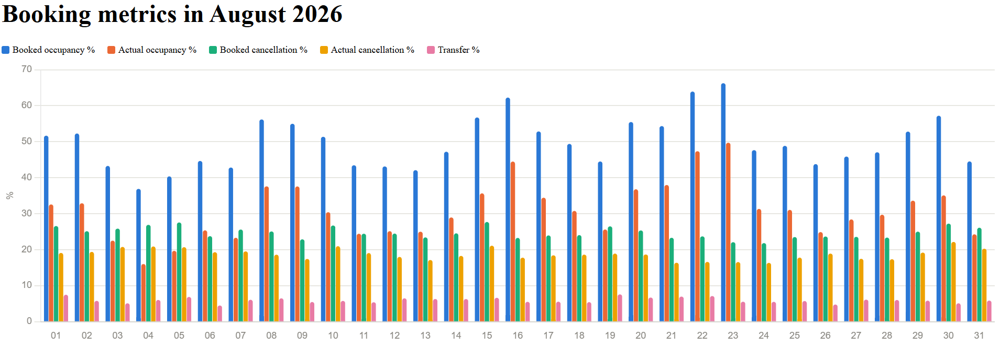
Click02Booking Dropoff Analysis by Page wise
▸
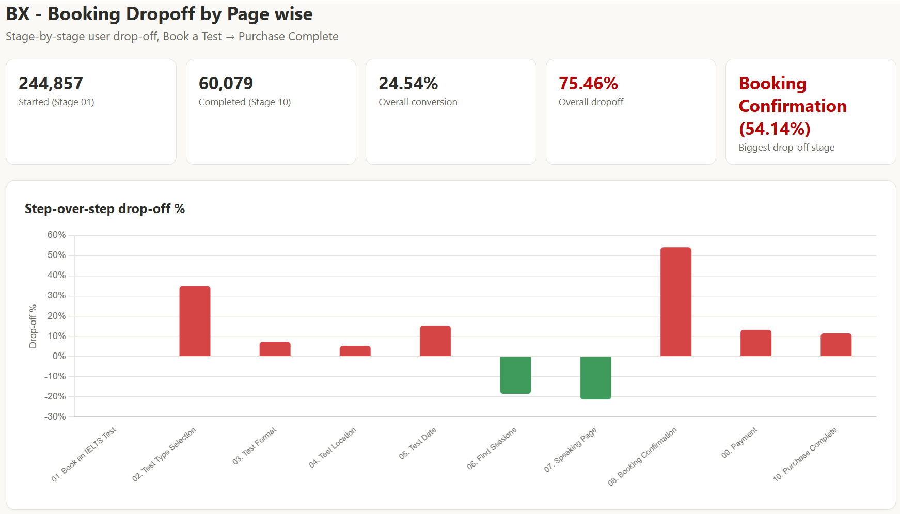
Click03Booking Journey Optimisation
▸
Current Booking Journey: 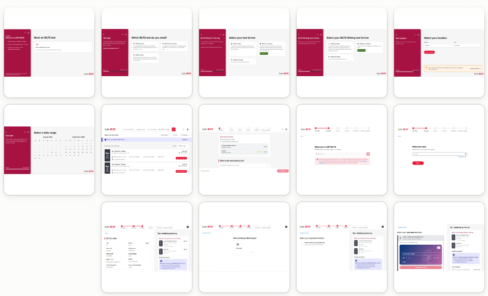
Proposed Booking Journey: 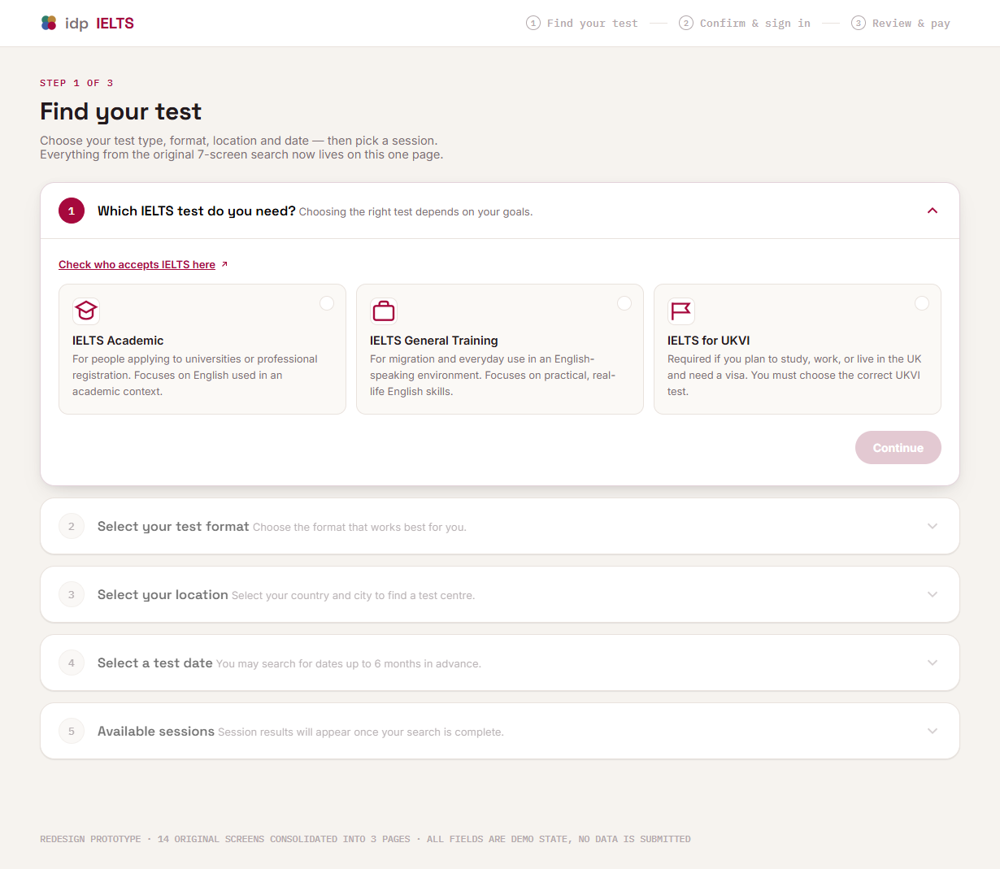
0448-Hour Booking limitation
▸
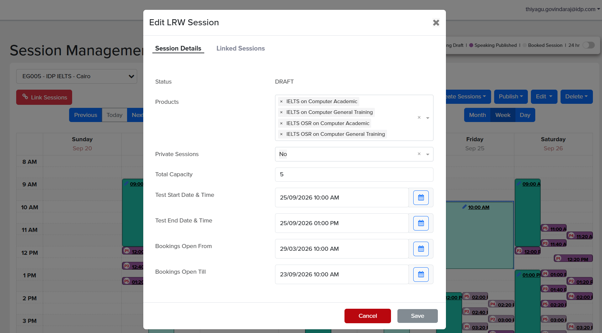
05Booking on Behalf – OSR Enablement
▸
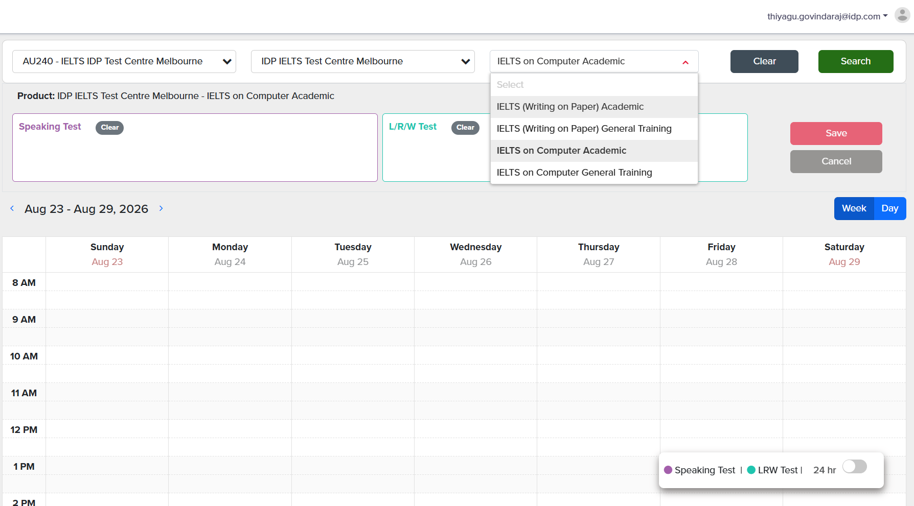
06TAS Modernization
▸
Current TAS Page: 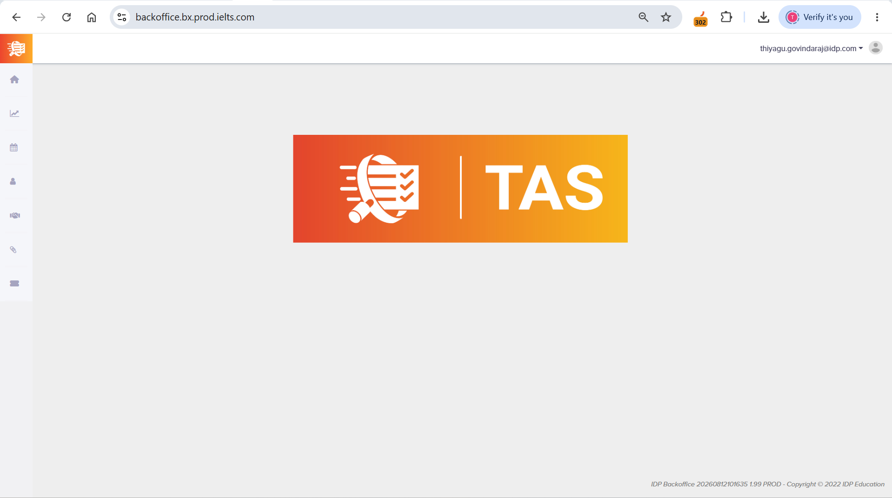
Proposed TAS Page: 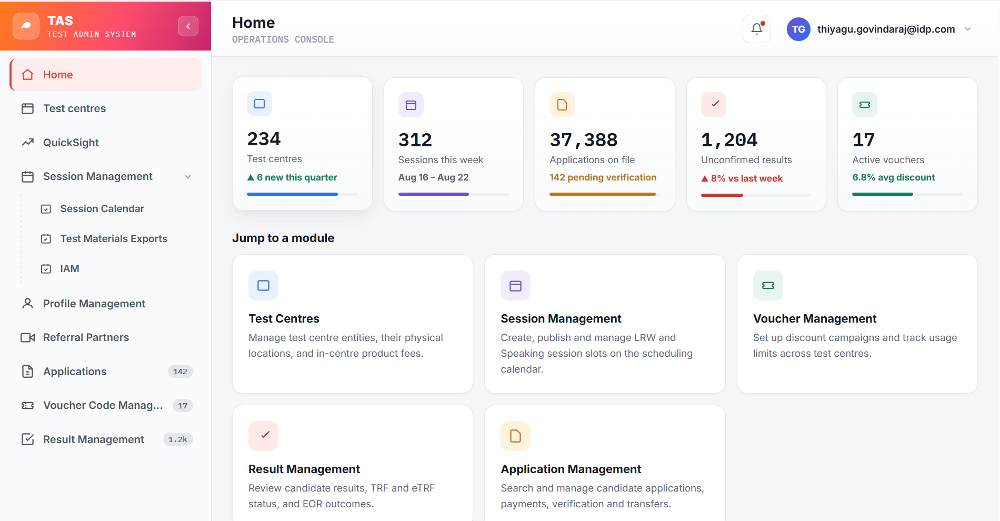
Assets Management
Maximize the value of every asset through strong ownership, governance, and lifecycle management.
What are we always aiming to
Key improvements area
01Repository Management
▸
- Ownership
- Access governance
- Security scanning
- Documentation
- Lifecycle management
- Archived or consolidated
02Deprecation of Older API Versions
▸
Engineering Approach 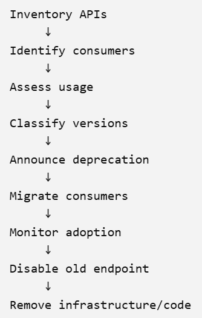
03Resource Rationalization
▸
Engineering Approach 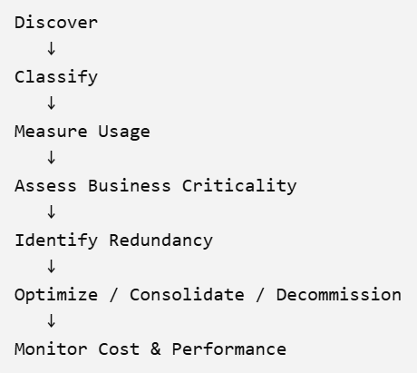
04Audit Log Implementation
▸
- Ops User login/logout
- Authentication failures
- Role/permission changes
- Configuration changes
- Create/update/delete operations
- Payment approved
- Etc,.
Cost
Optimize engineering costs without compromising quality, security, reliability, or customer experience.
What are we always aiming to
Key improvements area
01RDS Separation by Asset wise
▸
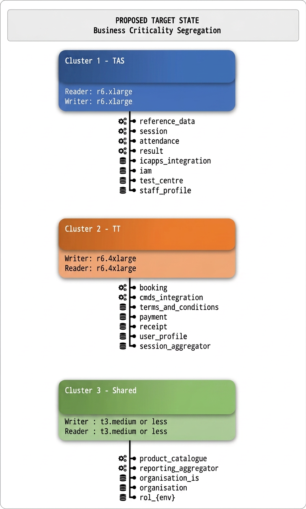
02Table Partitioning limitation
▸
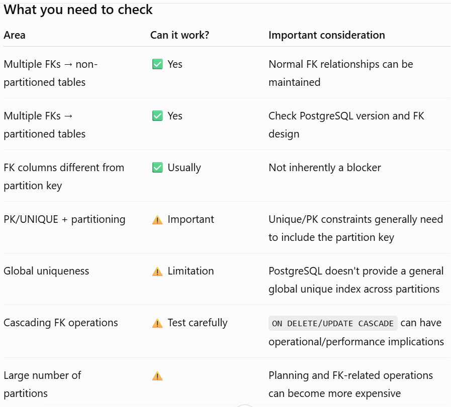
03PERF Environment Dicommisioning
▸
- LT-PERF Account Dicommisioning
04Operational Cost Optimisation Opportunities
▸
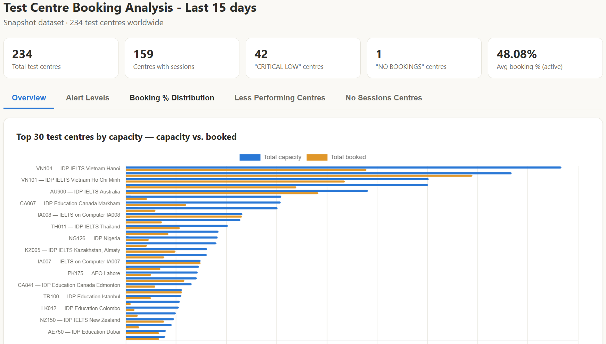
TC Performance AnalysisAI
Leverage AI responsibly to accelerate engineering productivity, innovation, and business value.
What are we always aiming to
Key improvements area
01Agentic AI
▸
- Development
- Code Review
- Unit testing
- e2e Testing
- Logs monitoring
- Incident Management
02Where you'd apply it next
▸
- AI-assisted test session grouping
- Using LLMs for support ticket categorization
- AI-assisted incident triage (summarizing logs/alerts)
- AI-assisted test coverage analysis
- Etc,.